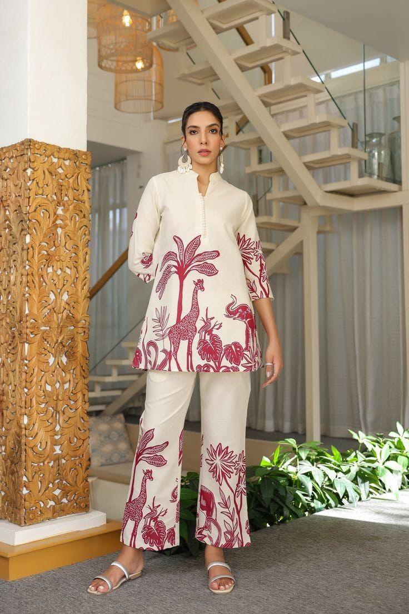

Co-ord sets are dominating fashion scenes across Pakistan, combining comfort with chic appeal. Whether you’re heading to university, brunch, or a casual meetup, co-ords make it effortlessly stylish.
Why Are Co-ord Sets Trending?
The best thing about co-ords is their simplicity – no more worrying about matching separates. From minimal solids to bold patterns, there’s a co-ord set for every vibe.

Pakistani designers and local brands are embracing the trend with linen, cotton, and even silk co-ords in flattering cuts.
How to Style Your Co-ord Set
- Add gold hoops and a structured handbag
- Layer with a denim jacket or long shrug
- Go for sneakers for a casual feel, or heels for a formal twist

Co-ord sets are more than just a trend—they’re a movement of effortless fashion. Say goodbye to “what to wear” stress and hello to co-ord confidence.
Shop your favorite co-ords today and tag us in your looks!